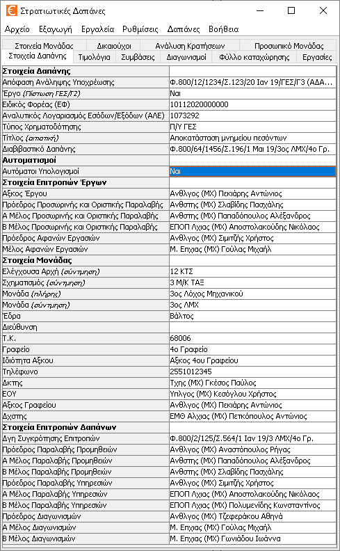
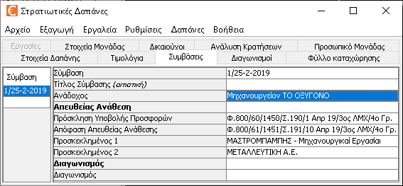
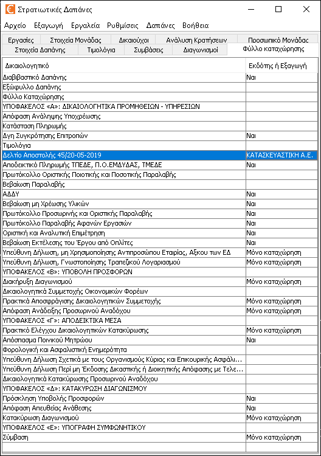
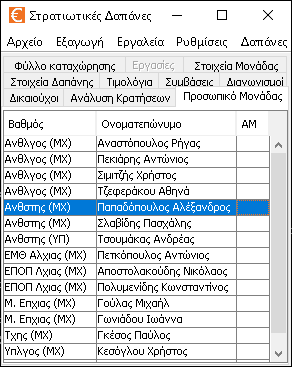

Καρτέλες
Το πρόγραμμα διαθέτει 10 ξεχωριστές περιοχές που μπορούν να επιλεχθούν από 10 διαφορετικές καρτέλες. Αυτές είναι οι παρακάτω:
- Στοιχεία Δαπάνης: Εδώ καταχωρούνται στοιχεία που αλλάζουν από δαπάνη σε δαπάνη, π.χ. ΑΛΕ, Τίτλος Δαπάνης κ.τ.λ.
- Τιμολόγια: Εδώ καταχωρούνται τα στοιχεία των τιμολογίων της δαπάνης καθώς και τα είδη του κάθε τιμολογίου.
- Συμβάσεις: Εδώ καταχωρούνται τα στοιχεία των συμβάσεων της δαπάνης.
- Διαγωνισμοί: Εδώ καταχωρούνται τα στοιχεία των διαγωνισμών της δαπάνης.
- Φύλλο Καταχώρησης: Εδώ ρυθμίζονται τα δικαιολογητικά που θα περιλαμβάνει η δαπάνη.
- Εργασίες: Εδώ καταχωρούνται οι εργασίες που έλαβαν χώρα καθώς και τα υλικά που κάθε εργασία κατανάλωσε.
- Στοιχεία Μονάδας: Εδώ βρίσκονται καταχωρημένα στοιχεία που είναι ίδια σε κάθε Δαπάνη, π.χ. Όνομα Μονάδας, Δκτης κτλ.
- Δικαιούχοι: Εδώ βρίσκονται καταχωρημένα στοιχεία για τους οικονομικούς φορείς (προμηθευτές, παρόχους υπηρεσιών, δικαιούχους, ανάδοχους της Μονάδας).
- Κρατήσεις: Εδώ βρίσκονται καταχωρημένες όλες οι κρατήσεις που έχει ο Στρατός.
- Προσωπικό Μονάδας: Εδώ βρίσκεται καταχωρημένο όλο το προσωπικό της Μονάδας καθώς και προσωπικό από άλλες Μονάδες που πιθανόν να παίρνει μέρος στις δαπάνες.
Τα στοιχεία των έξι πρώτων ετικετών αποθηκεύονται στο αρχείο κάθε δαπάνης. Τα στοιχεία των τεσσάρων τελευταίων ετικετών που είναι σταθερά για κάθε δαπάνη, αποθηκεύονται στο αρχείο «expenditure.ini».
Στοιχεία Δαπάνης

Εδώ υπάρχουν καταχωρημένα διάφορα στοιχεία που είναι συγκεκριμένα για κάθε δαπάνη. Τα στοιχεία αυτά σώζονται στο αρχείο της δαπάνης.
Τιμολόγια

Η οθόνη χωρίζεται σε τρία μέρη:
- Πίνακας Τιμολογίων: Κάθε γραμμή του πίνακα αυτού αφορά ένα τιμολόγιο. Επιπλέον, για το τιμολόγιο αυτό, τα είδη του εμφανίζονται στον επόμενο πίνακα «Πίνακας ειδών».
- Πίνακας Ειδών: Εδώ καταχωρούνται τα είδη που αφορούν το επιλεγμένο τιμολόγιο στον «Πίνακα τιμολογίων».
- Εποπτικός Πίνακας: Εμφανίζει αριθμητικά στοιχεία για το επιλεγμένο τιμολόγιο και για κάποιες ομάδες τιμολογίων. Σε κάθε αλλαγή που κάνετε στα τιμολόγια ή στα είδη τους, ο εποπτικός πίνακας ενημερώνεται αμέσως.
Πίνακας Τιμολογίων
Κάθε εγγραφή (γραμμή) του πίνακα αφορά ένα τιμολόγιο. Χρειάζεται προσοχή γιατί αν διαγράψετε ένα τιμολόγιο διαγράφονται και όλα τα είδη του.
- Τιμολόγιο: H ταυτότητα του τιμολογίου. Πρέπει οπωσδήποτε να έχει τη μορφή π.χ. 1234/21-04-2005 δηλαδή «αριθμός τιμολογίου»/«ημέρα»-«μήνας»-«έτος».
- Κατηγορία: Υπάρχουν εφτά κατηγορίες τιμολογίου που μπορείτε να επιλέξετε από λίστα:
- Προμήθεια υλικών: Αφορά αγορά υλικών. Αν οι αυτοματισμοί είναι ενεργοί, τότε επηρεάζεται το ΦΕ το οποίο μπορεί να πάρει τιμή 0 ή 4.
- Παροχή υπηρεσιών: Αφορά αμοιβές για εργασίες. Αν οι αυτοματισμοί είναι ενεργοί, τότε επηρεάζονται οι κρατήσεις και το ΦΕ. Το ΦΕ μπορεί να πάρει τιμή 0, 3 (αν η δαπάνη αφορά έργο) ή 8.
- Προμήθεια υγρών καυσίμων: Αφορά αγορά υγρών καυσίμων. Αν οι αυτοματισμοί είναι ενεργοί, τότε επηρεάζεται το ΦΕ το οποίο μπορεί να πάρει τιμή 0 ή 1.
- Μίσθωση ακινήτων: Αφορά ενοικίαση ακινήτου με έξοδα της Υπηρεσίας. Αν οι αυτοματισμοί είναι ενεργοί, τότε το ΦΠΑ και το ΦΕ είναι 0 και επηρεάζονται οι κρατήσεις.
- Λογαριασμοί ύδρευσης - αποχέτευσης ή έργα της ΔΕΗ: Αφορά περιοδικούς λογαριασμούς ύδρευσης και αποχέτευσης ή έργα της ΔΕΗ. Αν οι αυτοματισμοί είναι ενεργοί, τότε οι κρατήσεις και το ΦΕ είναι 0.
- Εκπόνηση μελέτης μηχανικού: Αφορά εκπόνηση σχεδίων και µελετών για κάθε είδους έργα στις κατηγορίες λιµενικά, υδραυλικά, οδοποιϊα, σιδηρόδρομοι, τοπογραφικές εργασίες. Αν οι αυτοματισμοί είναι ενεργοί, τότε το ΦΕ είναι 4 και επηρεάζονται οι κρατήσεις.
- Επίβλεψη εφαρμογής μελέτης ή εκπόνηση μελέτης εκτός μηχανικού: Αφορά εκπόνηση σχεδίων και µελετών για κάθε είδους έργα εκτός των παραπάνω κατηγοριών ή επίβλεψη εφαρμογής μελέτης. Αν οι αυτοματισμοί είναι ενεργοί, τότε το ΦΕ είναι 10 και επηρεάζονται οι κρατήσεις.
- Δικαιούχος ή Σύμβαση Επιλέγετε από την λίστα (που παίρνει δεδομένα από το «Προμηθευτές» και από το «Συμβάσεις») τον οικονομικό φορέα στον οποίο κόψατε το τιμολόγιο ή τη σύμβαση που έχετε υπογράψει με αυτόν. Αν οι αυτοματισμοί είναι ενεργοί, ενδέχεται κατά την εισαγωγή/τροποποίηση/διαγραφή στοιχείων, ένας δικαιούχος, αυτόματα να αλλάξει σε σύμβαση (με τον ίδιο δικαιούχο) ή το αντίστροφο.
- Κρατήσεις: Επιλέγετε από την λίστα (που παίρνει δεδομένα από το «Κρατήσεις») τις κρατήσεις του τιμολογίου. Αν οι αυτοματισμοί είναι ενεργοί, οι κρατήσεις υπολογίζονται αυτόματα και δεν μπορείτε να τις θέσετε εσείς.
- ΦΕ: Επιλέγετε από την λίστα το ΦΕ του τιμολογίου. Αν οι αυτοματισμοί είναι ενεργοί, το ΦΕ υπολογίζεται αυτόματα και δεν μπορείτε να το θέσετε εσείς.
Αν δεν έχετε ευχέρεια στο να επιλέγετε ΦΠΑ, ΦΕ και Κρατήσεις για το τιμολόγιο μπορείτε να ενεργοχρησιμοποιήσετε τους αυτοματισμούς, οι οποίοι το κάνουν αυτόματα. Αν είστε έμπειρος χρήστης καλύτερα να το αποφύγετε.
Πίνακας Ειδών
Ο πίνακας αυτός αφορά τα είδη του τιμολογίου που είναι επιλεγμένο στον «πίνακα τιμολογίων». Κάθε εγγραφή (γραμμή) του πίνακα αφορά ένα είδος.
Έχετε υπόψιν σας ότι η υποδιαστολή των αριθμών είναι η τελεία "." και όχι το κόμμα ",".
- Είδος: Το όνομα του είδους. π.χ. «Κατσαβίδι ηλεκτρικό».
- Ποσότητα: Η ποσότητα του είδους. Αυτομάτως τίθεται σε 1 επειδή είναι η πιο συνηθισμένη ποσότητα. Μπορείτε να την αλλάξετε.
- Τιμή μονάδας: Μπορείτε να δώσετε όσα δεκαδικά ψηφία θέλετε. Τροποποιώντας το κελί αυτό, ενημερώνονται αυτόματα τα κελιά Συνολική τιμή, Τιμή μονάδας με ΦΠΑ και Συνολική τιμή με ΦΠΑ.
- Συνολική τιμή: Γίνεται στρογγυλοποίηση στο τρίτο δεκαδικό ψηφίο με βάση την Τιμή μονάδας. Τροποποιώντας το κελί αυτό, ενημερώνονται αυτόματα τα κελιά Τιμή μονάδας, Τιμή μονάδας με ΦΠΑ και Συνολική τιμή με ΦΠΑ.
- ΦΠΑ: Επιλέξτε το ΦΠΑ για κάθε είδος χωριστά. Για κάθε νέο είδος που προστίθεται, αυτομάτως τίθεται το ΦΠΑ του τελευταίου είδους του τιμολογίου. Αν δεν υπάρχει κανένα είδος ακόμα στο τιμολόγιο, αυτομάτως τίθεται 24 επειδή είναι το πιο συνηθισμένο ΦΠΑ. Από τη λίστα όμως μπορείτε να επιλέξετε και άλλα είδη ΦΠΑ και επιπλέον μπορείτε να πληκτρολογήσετε και άλλα νούμερα. Τροποποιώντας το κελί αυτό, ενημερώνονται αυτόματα τα κελιά Τιμή μονάδας με ΦΠΑ και Συνολική τιμή με ΦΠΑ. Αν οι αυτοματισμοί είναι ενεργοί, τότε εφαρμόζονται περιορισμοί πάνω στο ΦΠΑ. Π.χ. αν το τιμολόγιο είναι Διατακτική από Στρατιωτικό Πρατήριο ή Κ.Ψ.Μ. (τύπος προμηθευτή «Στρατιωτικά Πρατήρια, πλην ΕΚΕΜΣ») το ΦΠΑ τίθεται αυτόματα μηδέν.
- Τιμή μονάδας με ΦΠΑ: Γίνεται στρογγυλοποίηση στο τρίτο δεκαδικό ψηφίο με βάση την Τιμή μονάδας. Τροποποιώντας το κελί αυτό, ενημερώνονται αυτόματα τα κελιά Τιμή μονάδας, Συνολική τιμή και Συνολική τιμή με ΦΠΑ.
- Συνολική τιμή με ΦΠΑ: Γίνεται στρογγυλοποίηση στο τρίτο δεκαδικό ψηφίο με βάση την Τιμή μονάδας. Τροποποιώντας το κελί αυτό, ενημερώνονται αυτόματα τα κελιά Τιμή μονάδας, Συνολική τιμή και Τιμή μονάδας με ΦΠΑ.
- Μονάδα μέτρησης: Επιλέγετε από λίστα την μονάδα μέτρησης του είδους. Αυτομάτως τίθεται «τεμάχια» αλλά υπάρχουν πολλές ακόμα επιλογές. π.χ. ρολά. Αν παραδόξως δεν υπάρχει αυτό που θέλετε μπορείτε να το γράψετε με το χέρι.

Επιλέγοντας κάποια είδη τιμολογίου και κάνοντας δεξί κλικ, εμφανίζεται το αναδυόμενο μενού, το οποίο στο συγκεκριμένο πίνακα, εκτός των άλλων έχει και την επιλογή «Αντιγραφή επιλεγμένων γραμμών στην τρέχουσα εργασία». Με την επιλογή αυτή, τα επιλεγμένα είδη τιμολογίου προστίθενται σαν υλικά στην επιλεγμένη εργασία της καρτέλας «Εργασίες». Εννοείται ότι αν δεν έχουν προστεθεί εργασίες ή δεν είναι καμία επιλεγμένη, δεν πρόκειται να ολοκληρωθεί η λειτουργία.
Εποπτικός Πίνακας
Ο πίνακας αυτός εμφανίζει κάθε στιγμή εποπτικά στοιχεία για τα τιμολόγια της δαπάνης:
- Τρέχον τιμολόγιο: Οι αξίες του τιμολογίου που είναι επιλεγμένο στον πίνακα τιμολογίων.
- Τιμολόγια σύμβασης: Οι συνολικές αξίες όλων των τιμολογίων της σύμβασης στην οποία ανήκει το επιλεγμένο τιμολόγιο στον πίνακα τιμολογίων. Στο πλαίσιο μιας σύμβασης μπορεί να έχουν εκδοθεί πολλά τιμολόγια.
- Τιμολόγια διαγωνισμού: Οι συνολικές αξίες όλων των τιμολογίων του διαγωνισμού στην οποία ανήκει το επιλεγμένο τιμολόγιο στον πίνακα τιμολογίων. Στο πλαίσιο ενός διαγωνισμού μπορεί να έχουν υπογραφεί πολλές συμβάσεις και να έχουν εκδοθεί πολλά τιμολόγια.
- Όλα τα τιμολόγια: Οι συνολικές αξίες όλων των τιμολογίων της δαπάνης.
Ο πίνακας αυτός δεν σας επιτρέπει να τον τροποποιήσετε γιατί τα στοιχεία του υπολογίζονται αυτόματα.
Αν κάποια κελιά του πίνακα είναι κενά, τότε, είτε η αντίστοιχη τιμή είναι μηδέν, είτε το τρέχον τιμολόγιο ή κάποιο από τα τιμολόγια αντίστοιχα δεν έχει συμπληρωμένα όλα τα στοιχεία του (είτε του τιμολογίου, είτε των ειδών του τιμολογίου), είτε το τρέχον τιμολόγιο δεν εντάσσεται σε κάποια σύμβαση ή σε κάποιο διαγωνισμό.
Συμβάσεις

Εδώ καταχωρούνται οι συμβάσεις της δαπάνης. Οι περισσότερες δαπάνες έχουν μία σύμβαση. Ωστόσο το πρόγραμμα υποστηρίζει δαπάνες με πολλές συμβάσεις. Τα στοιχεία των συμβάσεων αποθηκεύονται στο αρχείο της δαπάνης.
Αν οι αυτοματισμοί είναι ενεργοί, τότε οι συμβάσεις δημιουργούνται αυτόματα, όταν η αξία της ομάδας τιμολογίων του ίδιου οικονομικού φορέα ξεπεράσει το προβλεπόμενο ποσό.
Τα στοιχεία της σύμβασης είναι τα παρακάτω:
- Σύμβαση: Η ταυτότητα της σύμβασης. Έχει τη μορφή «Αριθμός Σύμβασης»/«Ημέρα»-«Μήνας»-«Έτος», π.χ. 3/10-3-2019. Ο αριθμός σύμβασης μπορεί να είναι ένας αριθμός πρωτοκόλλου της Μονάδας ή ένας αύξων αριθμός σύμβασης από την αρχή του έτους. Εν τέλει, η σύμβαση απεικονιζεται στα δικαιολογητικά ως «Αριθμός Σύμβασης»/«Έτος» (π.χ. 3/2019) αλλά το πρόγραμμα απαιτεί ακριβή ημερομηνία γιατί τη χρειάζεται.
- Τίτλος Σύμβασης (αιτιατική): Το αντικείμενο της σύμβασης. Π.χ. «προμήθεια εργαλείων». Αν το αφήσουμε κενό (το σύνηθες), υιοθετείται ο «Τίτλος Διαγωνισμού» του διαγωνισμού στον οποίο ανήκει η σύμβαση. Αν δεν ανήκει σε διαγωνισμό ή ο «Τίτλος Διαγωνισμού» είναι κενός, τότε υιοθετείται ο «Τίτλος» της καρτέλας Στοιχεία Δαπάνης. Έχει χρησιμότητα σε περιπτώσεις που η δαπάνη έχει πολλές συμβάσεις με διακριτά αντικείμενα.
- Διαγωνισμός: Επιλέγεται από τη λίστα διαγωνισμών, ο διαγωνισμός στον οποίο ανήκει η σύμβαση. Αν δεν ανήκει σε διαγωνισμό, επιλέγουμε το τελευταίο στοιχείο της λίστας που είναι κενό. Αν οι αυτοματισμοί είναι ενεργοί, τότε υπάρχει περιορισμός στην επιλογή διαγωνισμών. Αν η αξία της ομάδας τιμολογίων του ίδιου οικονομικού φορέα είναι κάτω από την προβλεπόμενη, ο «Διαγωνισμός» παραμένει κενός. Αν είναι πάνω από την προβλεπόμενη και επιλέξουμε έναν διαγωνισμό από τη λίστα (πρέπει να επιλέξει ο χρήστης, δε γίνεται αυτόματα), τότε δεν μπορεί να αφαιρεθεί.
- Ανάδοχος: Ο ανάδοχος της σύμβασης. Αν οι αυτοματισμοί είναι ενεργοί, ο χρήστης δεν μπορεί να αλλάξει τον ανάδοχο καθώς η διαδικασία είναι αυτοματοποιημένη.
Διαγωνισμοί

Εδώ καταχωρούνται οι διαγωνισμοί της δαπάνης. Σχεδόν όλες οι δαπάνες έχουν το πολύ ένα διαγωνισμό. Ωστόσο το πρόγραμμα υποστηρίζει δαπάνες με πολλούς διαγωνισμούς, γιατί μπορούν να διατεθεί πίστωση με γενικό θέμα έργου, στο οποίο να υπάρχουν αντικείμενα μη ομοειδή. Τα στοιχεία των διαγωνισμών αποθηκεύονται στο αρχείο της δαπάνης.
Η οθόνη χωρίζεται σε τρία μέρη:
Επιλογέας και Διαχείριση Διαγωνισμών
Οι λειτουργίες της διαχείρισης διαγωνισμών είναι οι παρακάτω:
- Τρέχον διαγωνισμός: Από την αναδυόμενη λίστα γίνεται η επιλογή του τρέχοντος διαγωνισμού, δηλαδή του διαγωνισμού που εμφανίζεται στους πίνακες της καρτέλας.
- Νέος διαγωνισμός: Το πλήκτρο δημιουργεί ένα νέο διαγωνισμό, τον οποίο και κάνει τρέχοντα.
- Διαγραφή διαγωνισμού: Το πλήκτρο διαγράφει τον τρέχοντα διαγωνισμό. Δεν είναι δυνατή η διαγραφή, αν ο τρέχοντας διαγωνισμός χρησιμοποιείται από κάποια σύμβαση.
Πίνακας Στοιχείων Διαγωνισμού
Σε αυτόν τον πίνακα, καταχωρούνται τα στοιχεία του διαγωνισμού, εκτός των στοιχείων των ενδιαφερομένων οικονομικών φορέων.
Τα στοιχεία του διαγωνισμού είναι τα παρακάτω:
- Διαγωνισμός: Αφορά στοιχεία της διαγωνιστικής διαδικασίας.
- Τίτλος Διαγωνισμού (αιτιατική): Το αντικείμενο του διαγωνισμού. Π.χ. «προμήθεια εργαλείων». Αν το αφήσουμε κενό (το σύνηθες), υιοθετείται ο «Τίτλος» της καρτέλας Στοιχεία Δαπάνης. Έχει χρησιμότητα σε περιπτώσεις που η δαπάνη έχει πολλούς διαγωνισμούς.
- Διακήρυξη Διαγωνισμού: Η ταυτότητα της διαταγής διακήρυξης του διαγωνισμού.
Αν η Απόφαση Ανάληψης Υποχρέωσης κοινοποιείται στο διαδίκτυο με ΑΔΑ και ΑΔΑΜ, τότε και η Διακήρυξη κοινοποιείται στο διαδίκτυο με ΑΔΑ και ΑΔΑΜ. Αν δεν κοινοποιείται στο διαδίκτυο, τότε αυτόματα κοινοποιείται στους ενδιαφερόμενους που έχουν δηλωθεί στον πίνακα ενδιαφερομένων και πρέπει να είναι τουλάχιστον τρείς.
Αν ήδη έχουμε εξάγει Διακήρυξη και θέλουμε να χρησιμοποιήσουμε αυτή στη δαπάνη, τότε στην καρτέλα του Φύλλου Καταχώρησης τη δηλώνουμε ως «Μόνο Καταχώρηση».
- Χρόνος Αποσφράγισης Προσφορών: Η χρονική στιγμή, στη μορφή «31 23:59 Δεκ 2019», στην οποία η Επιτροπή Διαγωνισμού παύει να δέχεται προσφορές και ξεκινάει συνεδρίαση για την αποσφράγιση τους. Αν ο διαγωνισμός δεν είναι συνοπτικός, είναι η χρονική στιγμή της συνεδρίασης για την αποσφράγιση, μόνο των δικαιολογητικών συμμετοχής και της τεχνικής προσφοράς.
- Χρόνος Αποσφράγισης Οικονομικών Προσφορών: Η χρονική στιγμή, στη μορφή «31 23:59 Δεκ 2019», στην οποία η Επιτροπή Διαγωνισμού ξεκινάει συνεδρίαση για την αποσφράγιση των οικονομικών προσφορών και τη σύνταξη πρακτικού αποσφράγισης οικονομικών προσφορών. Αν ο διαγωνισμός είναι συνοπτικός μπορεί να παραλειφθεί και σε αυτή την περίπτωση συνεξετάζεται στον προηγούμενο χρόνο.
- CPV: Το Common Procurement Vocabulary - Κοινό Λεξιλόγιο Δημοσίων Συμβάσεων, είναι μια κωδικοποίηση για το αντικείμενο της δαπάνης. Θα βρείτε τον κωδικό από λίστες που κυκλοφορούν στο διαδίκτυο.
- Συμπληρωματικό CPV: Το Συμπληρωματικό Λεξιλόγιο είναι κωδικοποίηση που προσθέτει επιπλέον πληροφορία για το αντικείμενο της δαπάνης. Είναι προαιρετικό.
- Προσφορά κατά Είδος: Ο διαγωνισμός γίνεται με προσφορά για κάθε είδος και όχι για όλο το αντικείμενο του διαγωνισμού. Αποτελεί μια πολύ σπάνια περίπτωση που μπορεί να οδηγήσει σε πολλούς μειοδότες (π.χ. ένας για το ένα είδος, ένας για το άλλο).
- Δικαιολογητικά Συμμετοχής (χωρίζονται με &): Τα δικαιολογητικά συμμετοχής που πρέπει να έχουν οι ενδιαφερόμενοι μαζί τους στο διαγωνισμό, όπως θα αναγραφούν στη διακήρυξη του διαγωνισμού. Τα διαχωρίζουμε με «&». Η προκαθορισμένη τιμή είναι «ΕΕΕΣ & Τεχνική Προσφορά & Οικονομική Προσφορά».
- Καταλογιστέο: Το καταλογιστέο ποσό που δεν πρέπει να ξεπεράσει ο διαγωνισμός. Π.χ. αν η διάθεση πίστωσης είναι 50.000€, ο διαγωνισμός δεν πρέπει να ξεπεράσει αυτό το ποσό.
- Απόφαση Ανάδειξης Προσωρινού Αναδόχου: Η ταυτότητα της διαταγής που αναδεικνύει τον προσωρινό Ανάδοχο.
Αν η Απόφαση Ανάληψης Υποχρέωσης κοινοποιείται στο διαδίκτυο με ΑΔΑ και ΑΔΑΜ, τότε και η Απόφαση Ανάδειξης Προσωρινού Αναδόχου κοινοποιείται στο διαδίκτυο με ΑΔΑ και ΑΔΑΜ.
Αν ήδη έχουμε εξάγει Διακήρυξη και θέλουμε να χρησιμοποιήσουμε αυτή στη δαπάνη, τότε στην καρτέλα του Φύλλου Καταχώρησης τη δηλώνουμε ως «Μόνο Καταχώρηση».
- Κατακύρωση: Αφορά στοιχεία μετά τη διαγωνιστική διαδικασία και μέχρι την κατακύρωση του διαγωνισμού.
- Δικαιολογητικά Κατακύρωσης (χωρίζονται με &): Τα δικαιολογητικά κατακύρωσης που πρέπει να καταθέσει ο προσωρινός Ανάδοχος για να μην κριθεί έκπτωτος. Τα διαχωρίζουμε με «&».
- Χρόνος Κατάθεσης Δικαιολογητικών Κατακύρωσης: Η χρονική στιγμή, στη μορφή «31 23:59 Δεκ 2019», μέχρι την οποία ο προσωρινός Ανάδοχος πρέπει να καταθέσει τα δικαιολογητικά κατακύρωσης, προκειμένου να μην κριθεί έκπτωτος.
- Εγγυητική Επιστολή Καλής Εκτέλεσης: Αν θέλουμε ο προσωρινός Ανάδοχος να καταθέσει εγγυητική επιστολή καλής εκτέλεσης.
- Κατακύρωση Διαγωνισμού: Η διαταγή που κατακυρώνει το διαγωνισμό σε έναν ή περισσότερους (εξαιρετικά σπάνιο) ανάδοχους.
Αν η Απόφαση Ανάληψης Υποχρέωσης κοινοποιείται στο διαδίκτυο με ΑΔΑ και ΑΔΑΜ, τότε και η Κατακύρωση Διαγωνισμού κοινοποιείται στο διαδίκτυο με ΑΔΑ και ΑΔΑΜ.
Αν ήδη έχουμε εξάγει Κατακύρωση Διαγωνισμού και θέλουμε να χρησιμοποιήσουμε αυτή στη δαπάνη, τότε στην καρτέλα του Φύλλου Καταχώρησης τη δηλώνουμε ως «Μόνο Καταχώρηση».
Πίνακας Ενδιαφερομένων
Κάθε γραμμή του πίνακα αυτού αφορά έναν ενδιαφερόμενο οικονομικό φορέα, για το διαγωνισμό.
Οι Ανάδοχοι των συμβάσεων που ανήκουν στο διαγωνισμό, εισάγονται αυτόματα στη λίστα και δεν είναι δυνατό να διαγραφούν.
Τα στοιχεία των ενδιαφερόμενων είναι τα παρακάτω:
- Ενδιαφερόμενος: Επιλέγουμε οικονομικό φορέα από την αναδυόμενη λίστα οικονομικών φορέων.
- Δικαιολογητικά Συμμετοχής (χωρίζονται με &): Τα δικαιολογητικά συμμετοχής που κατέθεσαν οι ενδιαφερόμενοι στο διαγωνισμό. Τα διαχωρίζουμε με «&». Η προκαθορισμένη τιμή είναι η ίδια με την αντίστοιχη τιμή του Πίνακα Στοιχείων Διαγωνισμού. Αν κάποιος ενδιαφερόμενος δεν καταθέσει όλα τα προβλεπόμενα δικαιολογητικά ή καταθέσει κάποιο ενναλλακτικό ή κάποια επιπλέον, τα καταχωρούμε.
- Λόγοι Απόρριψης Συμμετοχής (χωρίζονται με &): Οι λόγοι που ο ενδιαφερόμενος απορρίφθηκε. Οι λόγοι αυτοί δεν πρέπει να αφορούν την οικονομική προσφορά που έκανε αλλά μόνο τα δικαιολογητικά συμμετοχής και την τεχνική προσφορά. Διαχωρίζουμε τους λόγους απόρριψης συμμετοχής με «&».
- Προσφορά ή Απόρριψη: Διακρίνουμε τις παρακάτω περιπτώσεις, ανάλογα με το αν η οικονομική προσφορά έγινε δεκτή ή όχι:
- Δεκτή: Αν έχουμε «Προσφορά κατά Είδος» αφήνουμε το κελί κενό. Αν όχι, δίνουμε την προσφορά που έκανε ο ενδιαφερόμενος, π.χ. 30.000€.
- Απορρίφθηκε: Οι λόγοι που ο ενδιαφερόμενος απορρίφθηκε, εξαιτίας της οικονομικής του προσφοράς. Τους διαχωρίζουμε με «&».
Φύλλο Καταχώρησης

Ανάλογα τον τύπο του διαγωνισμού της δαπάνης, το πρόγραμμα προσαρμόζει το φύλλο καταχώρησης εγγράφων και τα στοιχεία που περιλαμβάνει μπορείτε να τα βρείτε στην ομώνυμη καρτέλα.
Στην καρτέλα αυτή δεν μπορείτε να κάνετε δραστικές αλλαγές.
Αυτόματα Δικαιολογητικά
Τα αυτόματα δικαιολογητικά δημιουργούνται αυτόματα από το πρόγραμμα, ανάλογα τον τύπο του διαγωνισμού της δαπάνης. Ο χρήστης δεν έχει πρόσβαση στο πόσες φορές θα εξαχθεί ένα αυτόματο δικαιολογητικό. Π.χ. η Κατάσταση Πληρωμής εξάγεται 3 φορές.
Ένα αυτόματο δικαιολογητικό, έχει το πολύ τρεις επιλογές εξαγωγής από το πρόγραμμα:
- Όχι: Το δικαιολογητικό δεν εξάγεται από το πρόγραμμα. Δεν εξάγεται ούτε σαν έντυπο, ούτε καταχωρείται στο Φύλλο Καταχώρησης Εγγράφων της δαπάνης. Είναι προφανές, ότι ένα δικαιολογητικό δε μπορεί να έχει μόνο αυτή την επιλογή διαθέσιμη.
- Ναι: Το δικαιολογητικό εξάγεται από το πρόγραμμα. Αν μπορεί να εξαχθεί σαν έντυπο (π.χ. Διαβιβαστικό Δαπάνης) εξάγεται σαν έντυπο. Αν μπορεί να καταχωρηθεί στο Φύλλο Καταχώρησης Εγγράφων της δαπάνης, καταχωρείται (π.χ. Απόφαση Ανάληψης Υποχρέωσης). Ένα δικαιολογητικό μπορεί να έχει μόνο αυτή την επιλογή διαθέσιμη.
- Μόνο Καταχώρηση: Το δικαιολογητικό μπορεί να εξαχθεί από το πρόγραμμα και σαν έντυπο (π.χ. Σύμβαση) αλλά δεν εξάγεται σαν έντυπο. Καταχωρείται μόνο στο Φύλλο Καταχώρησης Εγγράφων της δαπάνης. Ένα δικαιολογητικό δε μπορεί να έχει μόνο αυτή την επιλογή διαθέσιμη, αλλά τη συνδυάζει με Ναι και ενδεχομένως και Όχι. Χρησιμοποιείται συνήθως σε δικαιολογητικά τα οποία υποτίθεται ότι έχουν εκτυπωθεί και υπογραφεί πολύ πριν ολοκληρωθεί ο φάκελος της δαπάνης, οπότε είναι ήδη διαθέσιμα και δε χρειάζεται να εξαχθούν από το πρόγραμμα (π.χ. η Διακήρυξη Διαγωνισμού απαιτείται να εξαχθεί πολύ πριν ολοκληρωθεί η δαπάνη. Αφού η δαπάνη ολοκληρωθεί, τοποθετούμε εντός του φακέλου της, τη Διακήρυξη που είχαμε εκδώσει και υπογράψει).
Δεν έχουν όλα τα δικαιολογητικά και τις τρεις επιλογές διαθέσιμες. Όσα έχουν μόνο μια (Ναι), αυτή είναι προεπιλεγμένη και ούτε εμφανίζεται, ούτε τροποποιείται. Π.χ. το Φύλλο Καταχώρησης θα εξαχθεί σε κάθε περίπτωση.
Κάποια δικαιολογητικά που φαίνεται να έχουν μόνο μια επιλογή (Ναι), εξάγονται αυτόματα μόνο αν απαιτείται. Π.χ. το Φορολογική και Ασφαλιστική Ενημερότητα, το Πρωτόκολλο Οριστικής Ποιοτικής και Ποσοτικής Παραλαβής κ.α.
Τα αυτόματα δικαιολογητικά δε μπορούν να διαγραφούν από τον πίνακα και το όνομα του δικαιολογητικού δεν μπορεί να τροποποιηθεί.
Δικαιολογητικά Ορισμένα από το Χρήστη
Τα ορισμένα από το χρήστη δικαιολογητικά, εισάγονται κατά τα γνωστά στον πίνακα (εισαγωγή στην τελευταία εγγραφή, πλήκτρο INSERT ή δεξί κλίκ με το ποντίκι και εισαγωγή κενής γραμμής για εισαγωγή στην τρέχουσα γραμμή).
Επίσης τα δικαιολογητικά αφαιρούνται από τον πίνακα κατά τα γνωστά (πλήκτρο DELETE κτλ). Αν επιλέξετε όλο τον πίνακα και πατήσετε το πλήκτρο DELETE θα διαγραφούν μόνο τα οριζόμενα από το χρήστη δικαιολογητικά.
Τα δικαιολογητικά του χρήστη, απλά καταχωρούνται στο Φύλλο Καταχώρησης Εγγράφων της δαπάνης. Παράδειγμα ενός δικαιολογητικού χρήστη, θα μπορούσε για παράδειγμα να ήταν μια έγκριση παράτασης υποβολής δαπάνης.
- Δικαιολογητικό: Το όνομα του δικαιολογητικού.
- Εκδότης ή Εξαγωγή: Ο Εκδότης του δικαιολογητικού. Μπορεί να είναι η Μονάδα, Οικονομικός Φορέας ή οποιοσδήποτε άλλος. Η Εξαγωγή είναι για τα αυτόματα δικαιολογητικά.
Στην εικόνα, το Δελτίο Αποστολής, που είναι και επιλεγμένο, είναι ορισμένο από το χρήστη δικαιολογητικό.
Εργασίες

Η καρτέλα χρησιμοποιείται μόνο σε δαπάνες έργων.
Η οθόνη χωρίζεται σε δύο μέρη:
- Λίστα Εργασιών: Κάθε γραμμή του πίνακα αυτού αφορά μια εργασία. Επιπλέον, για την εργασία αυτή, τα υλικά που χρησιμοποιήθηκαν εμφανίζονται στον επόμενο πίνακα «Λίστα υλικών».
- Λίστα Υλικών: Εδώ καταχωρούνται τα υλικά που χρησιμοποιήθηκαν στην εργασία που είναι επιλεγμένη στη «Λίστα εργασιών».
Λίστα Εργασιών
Κάθε εγγραφή (γραμμή) του πίνακα αφορά μια εργασία. Χρειάζεται προσοχή γιατί αν διαγράψετε μια εργασία διαγράφονται και όλα τα υλικά που χρησιμοποιήθηκαν στην εργασία αυτή.
Μπορείτε να καταχωρήσετε εργασίες χωρίς να καταχωρήσετε υλικά γι' αυτές (σε περίπτωση που η εργασία δεν κατανάλωσε υλικά).
Έχετε υπόψιν σας οτι η υποδιαστολή των αριθμών είναι η τελεία "." και όχι το κόμμα ",".
- Εργασία: Η εργασία που έγινε π.χ. «Περιέλιξη εκκινητή οχήματος».
- Ποσότητα: Πόση ποσότητα εργασίας εκτελέστηκε π.χ. 1.
- Μονάδα μέτρησης: Επιλέγετε από λίστα την μονάδα μέτρησης της εργασία που εκτελέστηκε. Αυτομάτως τίθεται «τεμάχια» αλλά υπάρχουν πολλές ακόμα επιλογές. π.χ. m2. Αν παραδόξως δεν υπάρχει αυτό που θέλετε μπορείτε να το γράψετε με το χέρι.
Λίστα Υλικών
Ο πίνακας αυτός αφορά τα υλικά που χρησιμοποιήθηκαν στην επιλεγμένη εργασία στη «λίστα εργασιών». Κάθε εγγραφή (γραμμή) του πίνακα αφορά ένα υλικό.
Έχετε υπόψιν σας οτι η υποδιαστολή των αριθμών είναι η τελεία "." και όχι το κόμμα ",".
- Υλικό: Το όνομα του υλικού. π.χ. «Χαλίκι 3Α».
- Ποσότητα: Η ποσότητα του υλικού που χρησιμοποιήθηκε στην τρέχουσα εργασία. Αυτομάτως τίθεται σε 1 επειδή είναι η πιο συνηθισμένη ποσότητα.
- Μονάδα μέτρησης: Επιλέγετε από λίστα την μονάδα μέτρησης του υλικού. Αυτομάτως τίθεται «τεμάχια» αλλά υπάρχουν πολλές ακόμα επιλογές. π.χ. m3. Αν παραδόξως δεν υπάρχει αυτό που θέλετε μπορείτε να το γράψετε με το χέρι.
Στοιχεία Μονάδας

Εδώ υπάρχουν καταχωρημένα διάφορα στοιχεία που είναι κοινά σε κάθε δαπάνη και αφορούν τη Μονάδα.
Τα στοιχεία αυτά αντιγράφονται στο αρχείο της δαπάνης με το που θα πατήσετε «Νέα Δαπάνη». Ο λόγος που υπάρχουν σε ξεχωριστή καρτέλα είναι για να μην καταχωρούνται ξανά και ξανά σε κάθε δαπάνη. Ο λόγος που ενώ υπάρχουν σε αυτή την καρτέλα, αντιγράφονται ξανά σε κάθε νέα δαπάνη, είναι ο εξής: Αν πάρετε το αρχείο της δαπάνης και πάτε σε μια άλλη Μονάδα (που προφανώς έχει άλλα «Στοιχεία Μονάδας») τότε δεν θα επηρεαστεί από εκείνα τα στοιχεία γιατί κουβαλάει τα δικά της.
- Στοιχεία Μονάδας
- Ελέγχουσα Αρχή (σύντμηση): Η αρχή που ελέγχει την αρτιότητα της δαπάνης. Είναι ο αποδέκτης προς ενέργεια στο διαβιβαστικό της δαπάνης. Π.χ. 12 ΚΤΣ.
- Σχηματισμός (σύντμηση): H συντομογραφία του Σχηματισμού, π.χ. 3 Μ/Κ ΤΑΞ.
- Μονάδα (πλήρης): Το πλήρες όνομα της Μονάδας (Όπως μπαίνει πάνω δεξιά στις Δγες), π.χ. 7ος Λόχος Μηχανικού, Σχολή Μηχανικού.
- Μονάδα (σύντμηση): H συντομογραφία της Μονάδας, π.χ. 7ος ΛΜΧ, ΣΜΧ.
- Έδρα: Η έδρα (πόλη ή χωριό) που βρίσκεται η Μονάδα. π.χ. Προβατώνας.
- Διεύθυνση: Αν υπάρχει διεύθυνση της Μονάδας, την βάζετε. π.χ. Στενημάχου 63. Είναι προαιρετικό πεδίο.
- Τ.Κ.: Ο Ταχυδρομικός Κώδικας της Μονάδας. Είναι προαιρετικό πεδίο.
- Γραφείο: Το πλήρες όνομα του Γραφείου που εκδίδει την Συγκρότηση Επιτροπών. π.χ. 4ο Γραφείο.
- Ιδιότητα Αξκού: Η ιδιότητα του Αξκου που υπογράφει στο Ακριβές Αντίγραφο των Δγων. π.χ. Αξκος 4ου Γραφείου.
- Τηλέφωνο: Το τηλέφωνο του Γραφείου ή της Μονάδας.
- Δκτης: Εδώ επιλέγετε από τη λίστα (που παίρνει δεδομένα από το «Προσωπικό Μονάδας») το όνομα του Δκτη.
- ΕΟΥ: Εδώ επιλέγετε από τη λίστα (που παίρνει δεδομένα από το «Προσωπικό Μονάδας») το όνομα του ΕΟΥ, που είναι ο Υδκτης.
- Αξκος Γραφείου: Εδώ επιλέγετε από τη λίστα (που παίρνει δεδομένα από το «Προσωπικό Μονάδας») το όνομα αυτού που έχει την «Ιδιότητα Αξκου» που βάλατε παραπάνω.
- Δχστης: Εδώ επιλέγετε από τη λίστα (που παίρνει δεδομένα από το «Προσωπικό Μονάδας») το όνομα του Διαχειριστή της Μονάδας.
- Στοιχεία Επιτροπών Δαπανών: Στοιχεία που απαιτούνται στη Δγη Συγκρότησης Επιτροπών.
- Δγη Συγκρότησης Επιτροπών: Η ταυτότητα της Δγης Συγκρότησης Επιτροπών. Καλό είναι να ορίζεται μια φορά και να έχει ισχύ π.χ. 2 χρόνια, για μεγάλο αριθμό δαπανών.
Αν η Δγη Συγκρότησης Επιτροπών κοινοποιείται στο διαδίκτυο με ΑΔΑ και ΑΔΑΜ τότε η ταυτότητα της διαταγής πρέπει να δωθεί στη μορφή «Φ.800/123/12345/Σ.1234/31 Δεκ 19/3ος ΛΜΧ/4ο Γρ. (ΑΔΑ: ΑΒΓ12-1ΔΕ, ΑΔΑΜ: 19REQ123456789)».
Αν η Απόφαση Ανάληψης Υποχρέωσης κοινοποιείται στο διαδίκτυο με ΑΔΑ και ΑΔΑΜ, τότε και η Απόφαση Απευθείας Ανάθεσης κοινοποιείται στο διαδίκτυο με ΑΔΑ και ΑΔΑΜ.
Αν ήδη έχουμε εξάγει Δγη Συγκρότησης Επιτροπών και θέλουμε να χρησιμοποιήσουμε αυτή στη δαπάνη, τότε στην καρτέλα του Φύλλου Καταχώρησης τη δηλώνουμε ως «Μόνο Καταχώρηση».
- Πρόεδρος και Μέλη Επιτροπών: Εδώ επιλέγετε από τη λίστα (που παίρνει δεδομένα από το «Προσωπικό Μονάδας») τα ονόματα των Προέδρων και των Μελών των προβλεπόμενων επιτροπών.
Δικαιούχοι

Εδώ υπάρχουν καταχωρημένοι οι οικονομικοί φορείς (προμηθευτές, πάροχοι υπηρεσιών, ανάδοχοι, δικαιούχοι) με τους οποίους συνεργάζεται η Μονάδα.
Η καρτέλα αποτελείται από 2 πίνακες. Στον αριστερό πίνακα επιλέγουμε, διαγράφουμε, προσθέτουμε δικαιούχους. Κάθε φορά που επιλέγουμε έναν δικαιούχο στον αριστερό πίνακα, στον δεξιό πίνακα εμφανίζονται τα στοιχεία του.
Κάθε φορά που κόβετε ένα τιμολόγιο από προμηθευτή κτλ, που δεν υπάρχει στη λίστα, θα πρέπει να τον καταχωρίσετε.
- Στοιχεία Επιχείρησης: Πληροφορίες που αφορούν αποκλειστικά την Επιχείρηση.
- Επωνυμία: Η επωνυμία της επιχείρησης.
- Τύπος: Ο τύπος της επιχείρησης, επιλέγεται από μια λίστα με τις παρακάτω επιλογές:
- Ιδιωτικός Τομέας: Όσοι δεν ανήκουν στις παρακάτω κατηγορίες.
- Δημόσιος Τομέας και ΕΚΕΜΣ: Αφορά τιμολόγια από Δημόσιες Υπηρεσίες ή το ΕΚΕΜΣ. Το ιδιαίτερο χαρακτηριστικό τους είναι ότι δεν έχουν ΦΕ και οι κρατήσεις βαρύνουν τη Στρατιωτική Υπηρεσία.
- Στρατιωτικά Πρατήρια, πλην ΕΚΕΜΣ: Προμηθευτές είναι τα Στρατιωτικά Πρατήρια, εκτός από το ΕΚΕΜΣ. Το επιπλέον χαρακτηριστικό τους σε σχέση με την παραπάνω κατηγορία, είναι ότι δεν έχουν ούτε ΦΠΑ.
- ΑΦΜ: Ο Αριθμός Φορολογικού Μητρώου της επιχείρησης.
- ΔΟΥ: Η Διεύθυνση Οικονομικών Υπηρεσιών στην οποία υπάγεται η επιχείρηση.
- Έδρα, Διεύθυνση, Τ.Κ.: Η έδρα, η διεύθυνση και ο ταχυδρομικός κωδικός της επιχείρησης, χωρισμένα με κόμμα ",".
- Στοιχεία Υπεύθυνης Δήλωσης: Προσωπικά στοιχεία του νόμιμου εκπροσώπου της επιχείρησης.
- IBAN: O IBAN της επιχείρησης. Ελέγχεται για την εγκυρότητά του και αν δεν είναι έγκυρος, δεν μπορεί να εξαχθεί σε δικαιολογητικό.
- Ονοματεπώνυμο: Το ονοματεπώνυμο του νόμιμου εκπροσώπου της επιχείρησης. Αν παραλειφθεί, αντικαθίσταται από την Επωνυμία της επιχείρησης.
- Ονοματεπώνυμο Πατέρα: Το ονοματεπώνυμο του πατέρα του νόμιμου εκπροσώπου της επιχείρησης.
- Ονοματεπώνυμο Μητέρας: Το ονοματεπώνυμο της μητέρας του νόμιμου εκπροσώπου της επιχείρησης.
- Ημερομηνία Γέννησης: Η ημερομηνία γέννησης του νόμιμου εκπροσώπου της επιχείρησης, στη μορφή «31 Δεκ 1980» ή «31 Δεκ 80».
- Τόπος Γέννησης: Ο τόπος γέννησης του νόμιμου εκπροσώπου της επιχείρησης.
- Αριθμός Ταυτότητας: Ο αριθμός ταυτότητας του νόμιμου εκπροσώπου της επιχείρησης.
- Τηλέφωνο: Το τηλέφωνο του νόμιμου εκπροσώπου της επιχείρησης.
- Διεύθυνση Κατοικίας (Έδρα, Διεύθυνση, Τ.Κ.): Η έδρα, η διεύθυνση και ο ταχυδρομικός κωδικός της κατοικίας του νόμιμου εκπροσώπου της επιχείρησης, χωρισμένα με κόμμα ",". Αν παραληφθεί, αντικαθίσταται από την Έδρα, Διεύθυνση, Τ.Κ. της επιχείρησης.
- e-mail: Το e-mail της επιχείρησης. Μπορεί να παραλειφθεί.
Κρατήσεις

Εδώ υπάρχουν καταχωρημένες οι συνήθεις κρατήσεις.
Αν θέλετε να προσθέσετε μια κράτηση κάνετε δεξί κλικ στην επικεφαλίδα του πίνακα (εκεί που είναι τα ονόματα των κρατήσεων) και από το αναδυόμενο μενού που θα εμφανιστεί επιλέξτε «Εισαγωγή στήλης». Εκεί μπορείτε να καταχωρήσετε μια νέα κράτηση.
Αν θέλετε να διαγράψετε μια κράτηση απλά μηδενίστε όλα τα κελιά που βρίσκονται σε αυτή τη στήλη. Αν το κάνετε αυτό, στην επόμενη εκκίνηση του προγράμματος η κράτηση θα έχει διαγραφεί. Οι στήλες που δεν διαγράφονται είναι: «Σύνολο», «ΜΤΣ», «Χαρτόσημο», «ΟΓΑ», «ΕΑΑΔΗΣΥ», «ΑΕΠΠ», «ΒΑΜ», «ΕΚΟΕΜΣ».
Κατά την πρώτη εκτέλεση του προγράμματος, οι ισχύουσες κρατήσεις, εισάγονται στον πίνακα. Αν π.χ. οι κρατήσεις αλλάξουν και εκδοθεί νέα έκδοση του προγράμματος, κατά την πρώτη εκτέλεση της νέας έκδοσης, οι νέες κρατήσεις θα προστεθούν στον πίνακα.
Υπόψιν ότι στους δεκαδικούς αριθμούς η υποδιαστολή δεν είναι "," αλλά ".".
Αν κάποια κράτηση εμφανίζεται στη μορφή "3.5Ε-4", ισοδυναμεί με 3.5·10-4 = 0.00035. Το γράμμα E προκύπτει από τη λέξη exponent - εκθέτης (του 10).
Προσωπικό Μονάδας

Εδώ υπάρχει καταχωρημένο το προσωπικό της Μονάδας καθώς και προσωπικό που συμμετέχει σε δαπάνες της Μονάδας αλλά ανήκει σε άλλες Μονάδες.
Χρειάζεται να τροποποιείτε την καρτέλα κάθε φορά που κάποιος μετατίθεται ή παίρνει απόσπαση από και προς τη Μονάδα.
- Βαθμός: Ο βαθμός του στελέχους. Πρέπει να είναι στη μορφή «Βαθμός (Ο/Σ)» ή «Βαθμός», π.χ. «Υπλγός (ΜΧ)» ή «Επχος». Αποδεκτοί βαθμοί είναι οι Στρτης, Δνεας, Δνέας, Λχιας, Λχίας, Επχιας, Επχίας, Αλχιας, Αλχίας, Ανθστης, Ανθστής, Ανθλγος, Ανθλγός, Ανθλχος, Υπλγος, Υπλγός, Υπλχος, Λγος, Λγός, Ιλχος, Ίλχος, Τχης, Επχος, Ανχης, Σχης, Τξχος, Υπτγος, Αντγος, Στγος, Στγός. Πρέπει να είναι ένας από αυτούς γιατί από αυτούς προκύπτει η πλήρης ονομασία του βαθμού π.χ. Ανχης => Αντισυνταγματάρχης. Διαφορετικά κάτι τέτοιο δε θα ήταν δυνατό.
- Ονοματεπώνυμο: Το ονοματεπώνυμο του στελέχους.
- Μονάδα (γενική με άρθρο): Δε χρειάζεται να συμπληρωθεί για προσωπικό της Μονάδας αλλά μόνο για προσωπικό ξένο προς τη Μονάδα, σε περίπτωση που συμμετέχουν σε δαπάνη της Μονάδας άτομα ξένα προς αυτή. Η καταχώρηση της Μονάδας πρέπει να γίνεται σε γενική ενικού με άρθρο (π.χ.: του 7ου ΛΜΧ).